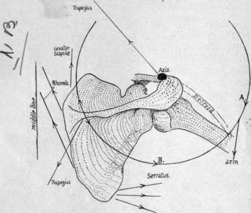

Spine And Acromion. Part 3
Description
This section is from the book "The Anatomy Of The Human Skeleton", by J. Ernest Frazer. Also available from Amazon: The anatomy of the human skeleton.
Spine And Acromion. Part 3
The upper end of the bone is usually over the second rib. The base of the spine can be located through the skin and is opposite the third dorsal spine : from this the spine can be traced upwards and outwards to the acromion. The spine and acromion are the only subcutaneous parts of the bone, but the inner and outer borders can be felt through the muscles, and the coracoid process can be recognised through the Deltoid about an inch below the junction of the middle and outer thirds of the clavicle.*
The scapula rotates on the clavicular attachment of the coraco-clavicular ligaments, particularly of the conoid ligament, but the first part of its movement is round an axis passing through the front part of the acromial joint. The partial upturning of the glenoid cavity that is the main object of such rotation is further increased by sterno-clavicular movement : it will perhaps give a clearer conception of these actions if the motion of raising the arm above the head is analysed. The arm is raised to a right angle by the Deltoid, acting from a scapula fixed by Serratus magnus and Trapezius (see Fig. 60). An arm held in full abduction by the Deltoid could be raised to a higher level by active contraction of the same muscles that would fix the scapula to enable the Deltoid to act-that is, the Serratus magnus and Trapezius, which rotate the scapula outwards, are also of service in holding it against the Deltoid and weight of the arm, which tend to rotate it inwards. The rotation appears to take place at first round an axis passing through the front part of the acromio-clavicular joint, but the consequent depression of the coracoid quickly tightens the conoid ligament and the axis is transferred to the upper attachment of this. Now the acromial surface shdes up. on the clavicular, but owing to the oblique plane of the surfaces this entails some outward displacement of the scapula, therefore tightens the inner part of the conoid band, and hinders further movement. By this time the alteration in direction of the glenoid cavity has only progressed a certain way, and further change is obtained by carrying the shoulder back through antero-posterior movements at the sterno-clavicular joint : this, when the angle is fixed as far forward as possible by Serratus magnus, has the effect of further rotating the scapula. At the same time the clavicle is elevated, and probably a very slight upward rotation occurs round its longitudinal axis, thus associating it with the rotating scapula and at the same time allowing elevation to the full extent, as the rhomboid ligament is attached behind this longitudinal axis.
* The glenoid is practically on the same level as the base of the spine when the arm is hanging by the side.
Fig. 60.-Scheme of the directions in which the muscles act in rotating the scapula. The centre round which the bone rotates is put approximately at the acromio-clavicular joint, and it is clear that any muscles pulling on the circle in the direction A. must rotate the bone in, while those pulling in the direction B. have the opposite effect. The upper fibres of Trapezius are mainly suspensory, the lower are external rotators, while the intermediate ones help in the retraction of the scapula which occurs in the later stages of elevation of the limb.
In life the various actions are combined, and go on more or less at the same time. On starting to raise the arm, the lower fibres of the Trapezius begin to rotate the scapula, by this action also, of course, holding it against the Deltoid. When the hmb has come out a little distance from the side, the Serratus magnus joins in the movement, and so the raising of the humerus by the Deltoid goes on with simultaneous rotation of the scapula, though this last movement is not proportionately so rapid. In the same way the " terminal " movements of elevation and rotation of the clavicle, with drawing back of the scapula, begin to make their appearance fairly early in the whole action.
The movements are reversed as the arm comes down, and internal rotation of the scapula is checked by the trapezoid fibres. The rotators of the scapula may be again enumerated :-
Turning the angle out are | Serratus magnus ; |
Trapezius. | |
Turning the angle in are | Rhomboids; |
Weight of limb (Deltoid) | |
(? Levator anguli scapulae). |
When the limb is fixed on an external object, so that muscles may act from it on the scapula, these rotators are, of course, not used in this way.
In its build the bone is very thin in most of its extent ; in fact it may be perforated in old subjects. But though thin it is rendered very rigid by the stout bar of bone already mentioned as existing near the axillary border for supporting the strain of the Serratus magnus, by the thickening along the vertebral border, and by the strong spine placed across it. The strongest part of the spine is the thick outer edge, and this supports the acromion and resists the downward pull of the Deltoid from this process. In structure the bone only presents cancellous tissue in its thicker parts : in the young bone there is more of this tissue between two enclosing plates of compact bone, but the middle layer disappears in the adult except along the vertebral and axillary borders and in the spine.
The scapula is sometimes described as consisting of three bony plates diverging from a central axis : the spine is called the mcsoscapula, the bone above the spine the prescapula, and the infraspinous plate the postscapula. These form angles with each other along the axis, which corresponds with the attached border of the spine : the angle between the meso- and pre- scapula is about 100 degrees, and those between pre- and post- scapula and meso- and post- scapula about 130 degrees.
A scapula is present in all mammals, whether they possess a clavicle or not : the human scapula is remarkable for the length of its postscapular part, which gives the bone its characteristic elongation. The proportionate length of this part increases after birth. The proportion of breadth to height is taken to form a " scapular index," and is lowest in the adult, highest in mid-fcetal life-higher in negroes than in Europeans.
Development
The scapula is recognisable as a mesenchymal condensation early in the second month, and is preformed in large part in cartilage, and a centre appears in the perichondrium on its ventral aspect about its middle, before the end of the second month. From this the greater part of the bone is formed, so that at birth only the acromion, coracoid, vertebral border and lower angle, and glenoid cavity are cartilaginous. This is one of the primary centres for the bone, forming the mass of its dorsal or " scapular " element : the other primary division of the bone is the ventral or " coracoid " element, represented, in part at any rate, by the coracoid process and upper part of the glenoid cavity in the human skeleton. This second primary centre is delayed till after birth, and then appears within the first year in the thick part of the process, while another centre appears later, in the eighth to tenth year, for the base and the upper part of glenoid : these are consolidated with the main bone shortly after puberty.
About this time or a little later secondary epiphysial centres make their appearance -two for the acromion, one for the angle, one for the vertebral border, and one for the rest of the glenoid fossa : additional small centres may appear on the trapezoid ridge of the coracoid and at its tip.
All these coalesce with the bone between twenty and twenty-five.
Enough has been said already to show that the body can be recognised as the dorsal portion or scapular part of the girdle, while the coracoid belongs to the ventral division. But which of the two ventral bars is represented by it is not at all clear. If it is the caudal element, then the precoracoid has either disappeared, or has been partly taken up in the clavicle, and partly remains outside this as fibro-cartilage, etc. If it is really precoracoid, the true coracoid has disappeared, or may be represented by the supraglenoid centre : this last view accords with ossification periods, but leaves the cartilage in and around the clavicle unaccounted for. Those that have a fancy for homologising the two girdles can compare the coracoid process with either the pubis or ischium, according to the view they take of the value of the process.
Following the process of its development, it seems that the spine ought to be considered merely a muscular process, except perhaps as concerns its thick outer margin, which is preformed in cartilage : it is possible that this may have to be considered in the future as representing a ventral bar much modified. The ventral surface of the scapula has been homologised with the gluteal surface of the Ilium, on the assumption that rotation of the girdles has altered their disposition ; there seems to be no ground for this assumption.
Continue to: